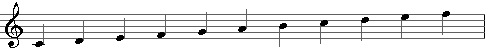

Metodo pratico
Metodo pratico
Vuonna 1834 Lontoossa ensimmäisen kerran julkaistu Nicolo Vaccajn Metodo pratico di canto italiano per camera diviso in 15 lezioni ("Käytännöllinen menetelmä italialaiseen kamarilauluun, jaettuna 15 oppituntiin") on laajimmalle levinnyt laulukoulu. Siitä on tähän mennessä julkaistu yli 40 painosta.
Italian kielessä metodo tarkoittaa tietä. Vaccaj arvattavasti halusi kirjoittaa laulukoulunsa tietyssä etenemisjärjestyksessä ja tiettyä tarkoitusta silmällä pitäen.
Vaccaj jaotteli laulukoulunsa 15 oppituntiin eli 15 tehtävään, jotka sisältävät yhteensä 22 laulua.
Säveltäjän esipuhe
"Ei ole epäilystäkään siitä, etteikö italia ole soinnikkuudessaan kieli joka soveltuu parhaiten laulamiseen ja josta laulutaidetta opiskelevan tulisi aloittaa. Perehdyttyään ensin italiaan, opiskelija tulee huomaamaan että laulaminen on helppoa muillakin kielillä. Toisella kielellä aloitettaessa ei näin tapahdu.
Pitkä kokemus on opettanut minulle että Saksassa, Ranskassa, Englannissa ja jopa Italiassakin monet, joskaan eivät kaikki, harrastajat laiminlyövät helposti pitkällisen harjoittelun ja säveltapailun opiskelun vedotessaan siihen, että he haluavat oppia vain sen verran kuin on tarpeellista kamarilaulajalle. Tästä seuraa se etteivät he opi minkäänlaista metodia.
Nämä syyt synnyttivät ajatuksen tehdä tämä pieni tutkielma, joka lyhykäisyydestään huolimatta tulee osoittautumaan uudeksi, innostavaksi ja käytännönläheiseksi teokseksi, joka auttaa opiskelijaa saavuttamaan tavoitteensa helposti ja nopeasti.
Vaikka laulaminen muulla kuin omalla äidinkielellä on pääasiallinen vaikeus jo jonkin aikaa jatkuneen säveltapailun ja ääniharjoitusten jälkeenkin, ajattelin että on viisaampaa tutustuttaa opiskelija italiankieleen asteikkkojen harjoittelussa kuin antaa hänen laulaa merkityksettömiä tavuja. Päätin korvata ne Metastasion kauniilla runoilla, joista valitsin tarkoitusperääni parhaiten sopivat.
Tämä edellä esitetyille ideoille perustuva teos tulee vähentämään perussääntöjen opiskelun ikävystyttävyyttä ja se saa opiskelijan harjoittelemaan järjestelmällisesti. Olen vakuuttunut siitä että tämä teos käytännön harjoituksineen ja tehtävineen osoittautuu hyödylliseksi ja tarpeelliseksi, ei pelkästään harrastajille, vaan myös laulajan ammattiin tähtääville opiskelijoille. Se täydentää ja selittää mitä tahansa metodia."
Nicolo Vaccaj
Ääniala

"Olen käyttänyt metodissani rajoitettua äänialaa, joka sopii useimmille äänille. On parempi aloittaa äänen harjoittaminen keskialueelta. Kaikki säännöt voidaan todellakin oppia tällä äänialueella ja, jos niin halutaan, voidaan jokainen tehtävä transponoida yhtä sävelaskelta ylemmäksi tai alemmaksi."
Vaccaj, N. 1833. Metodo pratico. Edition Peters.
Harjoitusten rakenne
Nicolo Vaccajn laulukoulu koostuu 22 laulusta, jotka jakautuvat kolmeen ryhmään: intervalleihin, koristeisiin ja erillisiin resitatiivi- ja aariaharjoituksiin
| Vaccajn oma numerointi |
S–A | Aloitus | Otsikot | Harjoitus |
|---|---|---|---|---|
| I | 1a | Manca sollecita... | La scala | asteikko |
| 1b | Semplicetta tortorella... | Intervalli di terza | terssi | |
| II | 2a | Lascia il lido, e il mare infido... | Intervalli di quarta | kvartti |
| 2b | Avvezzo a vivere... | Intervalli di quinta | kvintti | |
| III | 3 | Bella prova é d'alma forte... | Intervalli di sesta | seksti |
| IV | 4a | Fra l'ombre un lampo solo... | Intervalli di settima | septimi |
| 4b | Quell' onda che ruina... | Intervalli di ottava | oktaavi | |
| V | 5 | Delira dubbiosa... | I semitoni | puolisävelaskel |
| VI | 6 | Nel contrasto amor accende... | Modo sincopato | synkooppi |
| VII | 7 | Come il candore... | Introduzione alle volate | johdatus juoksutukseen |
| VIII | 8a | Senza l'amabile... | Le appoggiatura sopra e sotto | pitkä etuhele (* |
| 8b | Benchè di senso privo... | L'acciaccatura | lyhyt etuhele | |
| IX | 9a | La gioia verace... | Introduzione al Mordente | johdatus jälkiheleeseen |
| 9b | L'augelletto in lacci stretto... | Mordente in diversi modi | jälkihele, kaksoishele | |
| X | 10a | Quando accende un nobil petto... | Introduzione al grupetto | johdatus kaksoisheleeseen |
| 10b | Più non si trovano... | Il gruppetto | kaksoishele | |
| XI | 11 | Se povero il ruscello... | Introduzione al trillo | johdatus trilliin |
| XII | 12 | Siam navi all' onde algenti... | Le volate | pitkä 16-osajuoksutus |
| XIII | 13a | Vorrei spiegar l'affanno... | Portamento I - Modo per portare la voce | kannattelu I - päänuotista ylös- tai alaspäin legatona sitoen pikkunuotti seuraavaan päänuottiin |
| 13b | O placido il mare... | Portamento II - Altro modo | kannattelu II - liukuen alhaalta ylös (kuin aalto) | |
| XIV | 14 | La patria è un tutto... | Il recitativo | resitatiivi |
| XV | 15 | Alla stagion de' fiori... | Riepilogo | kertaus |
(* Käytetään myös termiä lyönti: etulyönti, jälkilyönti, kaksoislyönti.
Vaccaj numeroi laulut roomalaisittain I-XV, joista seitsemällä luvulla (I, II, IV, VIII, IX, X ja XIII) on kaksi laulua kullakin.
Sibelius-Akatemiassa (S-A) noudatetaan Vaccajn jaottelua 1-15 (I-XV), mutta lisätään a ja b -kirjaimet erottamaan laulut ja osoittamaan niiden järjestys.
Kamarilaulajat
Metodo praticon esipuheessa Vaccaj kertoo ajatelleensa kohderyhmänään kamarilaulajia, joilla hän tarkoittaa laulun harrastajia eli amatöörejä. Tämä oppilasryhmä halusi laulaa vähemmän vaativia lauluja, ei esimerkiksi aarioita oopperoista tai oratorioista. Vaccajn laulukoulu lähestyykin "kamarilaulua" erotuksena "oopperalaulusta". Tästä syystä Metodo praticoa ei ole totuttu pitämään vaikeana, vaan se on tullut hyvin suosituksi.